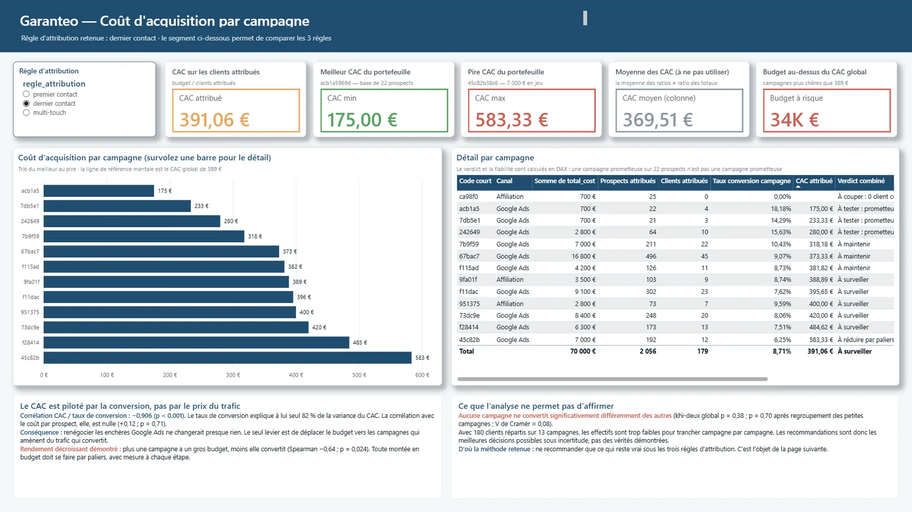

6
Études de cas sélectionnées
Je transforme des données brutes en décisions — du cas métier au dashboard, à la requête ou au pipeline livré.
SQL / BigQuery·Python / Pandas·Power BI / DAX·dbt·Google Cloud·Statistiques
Le projet final de la formation, mené en solo du cadrage à la soutenance
Le lien entre la dépense et le client n'existait nulle part dans les données. Je l'ai reconstruit par attribution multi-touch — et découvert que changer la règle retourne entièrement le classement des campagnes. Une campagne passe de la dernière à la première place sans qu'un euro ait bougé.

6 études de cas sélectionnées sur 14 semaines de formation intensive
Dashboard interactif pour une usine de câbles : suivi de facturation, rentabilité et analyse Pareto des clients les plus rentables.
Croissance et rentabilité d'une marketplace e-commerce : Electronics génère le plus de CA, Clothing est la catégorie la plus rentable.
Pipeline automatisé qui recalcule chaque nuit le taux de rétention, sans intervention humaine.
Une nouvelle fonctionnalité d'écoute testée sur ~190 000 sessions, avec triple vérification de robustesse (abonnement, pays, temps) avant de trancher.
Architecture en couches (staging → intermediate → mart) sur un dataset e-commerce, pour ne plus refaire les mêmes jointures à chaque question.
70 000 € répartis sur 13 campagnes, sans aucun lien traçable entre la dépense et le client. Attribution multi-touch reconstruite, et démonstration que changer de règle retourne entièrement le classement des campagnes.